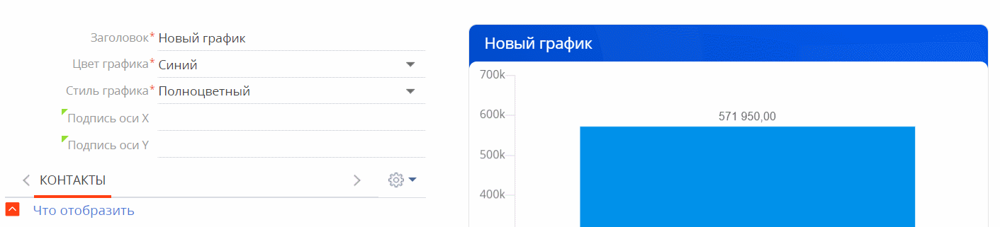

Пользовательский интерфейс приложения —инструмент, при помощи которого пользователи будут взаимодействовать с вашим приложением Creatio. Он разрабатывается в визуальном редакторе, который позволяет создавать и настраивать внешний вид приложений, адаптированный под разные типы экранов, в том числе, мобильные устройства. Для создания интерфейса можно использовать готовые шаблоны с разметкой, например, страницы с вкладками или дашбордами. Также вы сможете создать пользовательский интерфейс любой структуры с нуля. Страницы настраиваются в новом фреймворке Freedom UI, что позволяет более гибко управлять внешним видом элементов, работать с источниками данных и размещать компоненты на странице произвольным образом.
Работа в дизайнере осуществляется с помощью low-code инструментов. Создание интерфейса предполагает формирование структуры страницы из элементов разметки: вкладок, островов, колонок. В зависимости от того, какую информацию вы хотите отобразить на странице, вы также можете настраивать графики, добавлять поля, списки, кнопки и другие компоненты.
Вы можете использовать дизайнер интерфейсов для кастомизации реестров и страниц произвольной структуры. Создание интерфейса предполагает формирование структуры страницы из вкладок, островов, колонок. В зависимости от того, какую информацию вы хотите отобразить на странице, вы также можете настраивать графики, добавлять поля, источники данных, кнопки и другие компоненты.
Чтобы перейти к настройке страниц Freedom UI, нажмите  в правом верхнем углу открытой страницы приложения → Настроить страницу.
в правом верхнем углу открытой страницы приложения → Настроить страницу.
Откроется дизайнер интерфейсов (Рис. 1).
Библиотека элементов (1). В библиотеке компонентов собраны все инструменты, необходимые для настройки пользовательских интерфейсов.
Панель действий (2). На панели действий вы можете сохранить дизайн страницы, отменить изменения, открыть исходный код, перейти к настройке свойств страницы.
Холст (3) — рабочая область дизайнера интерфейсов. Используйте drag-and-drop, чтобы перетащить элементы из библиотеки на холст и таким образом настроить структуру страницы.
Панель настройки (4). На панели настроек вы можете управлять свойствами визуальных компонентов, поведением кнопок, групп, графиков и т. д. Подробнее настройки рассмотрены в описании каждого элемента. Панель настроек открывается по двойному клику на нужный элемент или по нажатию  при выделении его на холсте.
при выделении его на холсте.
Элементы дизайнера интерфейсов
Типы элементов, используемых в дизайнере представлены в таблице ниже:
|
Типы элементов |
Описание |
|---|---|
| Данные | Группа элементов, предназначенная для работы с источником данных страницы — объектом раздела, к которому относится страница. |
| Графики | Элементы для визуализации статистических данных. Используются графики следующих типов: сплайн, линия, горизонтальная гистограмма, кольцевая, с областями, гистограмма, точечная, воронка, показатель, воронка продаж, сквозная воронка. |
| Компоненты | Элементы для выполнения целевых действий на странице и решения ряда других задач: кнопка, текст, группы, список, панель действий. |
| Элементы разметки | Элементы, из которых формируется структура страницы: группы, вкладки, острова, колонки. |
| Поля |
Элементы для отображения и ввода данных. Используются поля следующих типов: текстовое, числовое, выпадающий список, дата/время, логическое (чекбокс). |
Данные
Страницы приложения могут работать с одним или несколькими источниками данных. Например, для страницы записи источником данных является конкретный объект. При работе с дизайном интерфейса происходит добавление и модификация атрибутов (полей) источника данных. Источник данных добавляется автоматически в момент создания приложения, а при создании страницы приложения вы можете добавить как существующий источник, так и создать новый.
Чтобы добавить на страницу существующие поля, перетащите их из области Данные в необходимую область холста.
При этом источник данных будет заполнен автоматически.
Вы можете добавить в приложение новые источники данных. Для этого:
- Нажмите кнопку Добавить источник данных .
- Выберите вариант “Новый источник данных“.
- В открывшемся окне заполните поля Заголовок и Описание источника данных.
В результате объект будет создан и подключен к странице как источник данных. В дизайнере интерфейсов он будет отображен в группе Данные. Поле Код (на английском) будет заполнено автоматически (Рис. 2).
Поля
Элемент разметки Поля позволяет отображать и вводить данные.
Вы можете добавить на страницу приложения поле ввода и связать его с нужным источником данных. В дальнейшем это поле можно будет использовать при работе с low-code дизайном приложения, а также выводить на страницу значение других полей из связанного объекта.
В дизайнере интерфейсов вы можете добавить на страницу следующие типы полей:
- Текст (String) — поле предназначено для ввода букв, цифр и других символов.
- Число — поле предназначено для ввода целых или дробных чисел.
- Выпадающий список — поле позволяет выбрать значения из заданного перечня вариантов, которые содержатся в справочнике или другом источнике данных. При добавлении данного поля вы можете сразу создать новый объект справочника.
- Дата/Время — поле для выбора даты и/или времени в зависимости от выбранного формата.
- Чекбокс — поле может содержать только одно из двух значений: “Да/Нет”. Значение “Да“ имеет вид установленного признака (флага).
Дизайнер интерфейсов поддерживает различные свойства для гибкой настройки полей, например, обязательность заполнения, режим только чтения (read-only), многострочность и другие. Свойства вы можете задать на панели настройки поля (Рис. 3):
- Заголовок — определяет название соответствующего поля в приложении и заполняется автоматически после выбора объекта.
- Код на английском — определяет уникальное название, которое Creatio будет использовать для создания колонки, и заполняется автоматически после выбора объекта.
- Формат — определяет формат отображения данных, например, справочник. Параметр является обязательным для заполнения.
- Описание — при необходимости добавьте дополнительную информацию о поле.
- Обязательное — определяет обязательность заполнения поля при сохранении страницы в приложении.
- Если необходимо, то установите признак в поле Копировать данные при копировании записи.
- Выбор объекта — выбор объекта системы, данные которого будут отображаться в поле.
- Доступность редактирования — определяет, сможет ли пользователь изменять данные в поле. Если необходимо сделать поле нередактируемым, то установите признак “Только чтение”.
- Положение заголовка — определяет положение заголовка относительно поля, например, “Слева”.
- Заголовок на странице — параметр используется, если заголовок на странице должен отличаться от заголовка в системе.
- Отображаемый текст в поле — позволяет добавить подсказку для пользователя (placeholder).
- Если необходимо, то добавьте следующие возможности (для справочных полей):
- Добавление новых значений.
- Отображение значения как ссылки.
- Разрешение переходить к списку записей.
Рис. 3 — Фрагмент настройки поля
Графики
Графики в дизайнере интерфейсов настраиваются аналогично аналитике в разделе Итоги основного приложения, однако имеют ряд особенностей:
- В графиках с несколькими сериями вы можете настроить цвет заголовка и цвет серии отдельно. Для этого используются поля Цвет графика и Стиль соответственно (Рис. 4).
Рис. 4 — Настройка графика с несколькими сериями
- Для заголовка дашбордов “Показатель” и “График” вы можете использовать различные возможности заливки, задав нужное значение в поле Стиль графика (Рис. 5).
Рис. 5 — Настройка стиля для заголовков графика
- Тип графика “Круговая диаграмма” заменен графиком “Кольцевая диаграмма”. При этом настройки выполняются аналогично (Рис. 6).
Рис. 6 — Кольцевая диаграмма

Компоненты
Кнопка
Компонент Кнопка используется для выполнения какого-либо действия на странице, например, сохранения внесенных изменений или запуска процесса.
На панели настройки вы можете задать параметры отображения и работы кнопки (Рис. 7):
- Заголовок — текст, который будет отображаться на кнопке.
-
Стиль кнопки — заливка фона кнопки, которая позволит визуально определять ее целевое назначение.
-
Действие — укажите действие, которое будет выполняться по нажатию кнопки пользователем:
-
сохранение записи,
-
закрытие страницы,
-
отмена внесенных изменений,
-
запуск процесса,
-
переход к странице,
-
переход к записи,
-
добавление записи.
В зависимости от выбора действия могут открыться дополнительные поля для заполнения. Рассмотрим их на примере запуска бизнес-процесса по нажатию кнопки.
-
-
Какой процесс запустить? — поле отображается только для кнопок, у которых в поле Действие указано “Запустить процесс”. Выберите один из существующих бизнес-процессов либо настройте новый.
Если в выбранном процессе используются параметры, то отобразится поле Как запустить?. Чтобы процесс запускался для выбранной страницы, укажите в появившемся поле параметр процесса, в который будет передан Id текущей записи. - Использовать иконку — позволяет добавить иконку для кнопки и определить ее положение. Иконка может как дополнять заголовок кнопки, так и заменить его.
Список
Компонент Список позволяет добавлять на страницу перечень данных выбранного объекта согласно предварительно настроенным фильтрам. Выбрать объект данных и задать параметры фильтрации вы можете на панели настройки элемента (Рис. 8).
Надпись
Компонент Надпись позволяет добавлять на страницу произвольный текст, а также выделить отдельные заголовки для групп элементов.
На панели настройки элемента вы можете редактировать текст и выравнивание надписи, стиль и формат шрифта, а также выбирать цвет текста и фона (Рис. 9):
- Текст — текст надписи, который будет отображаться на странице приложения. Поле является обязательным для заполнения.
- Стиль — стиль надписи, например, “Заголовок 1”, который будет отображаться на странице приложения. Поле является обязательным для заполнения.
- Формат — формат шрифта, например, “Полужирный”. Поле является обязательным для заполнения.
- Выравнивание — вариант выравнивания текста: слева, по центру, справа, по ширине.
- Цвет — цвет текста.
- Цвет фона — цвет фона надписи.
Группы
Компонент Группы позволяет настроить структуру групп для сегментации записей по заданным фильтрам. Для корректной работы компонента необходимо установить связь с ним на панели настроек списка или источника данных страницы. (Рис. 10) .
Меню управление группами
Компонент Меню управление группами позволяет управлять отображением иерархической структуры групп на странице. Если на страницу добавлен компонент Группы, но нет меню управления, то иерархическая структура будет отображаться на странице всегда.
Панель действий
Компонент Панель действий позволяет перейти к настройке динамического кейса, согласно которому должна выполняться работа в приложении.
Если на панели настроек элемента правильно указан источник данных, то по кнопке Настроить кейсы вы сможете перейти в дизайнер кейсов, где указываются стадии кейса, а также шаги и задачи, необходимые для выполнения. Подробнее: Работа в дизайнере и примеры настройки кейсов.
Элементы разметки
Группа
Элемент разметки Группа используется для добавления на страницу элементов, объединенных определенной логикой. Данный элемент вы можете использовать при создании детали. Для этого необходимо добавить и настроить компонент Список, а в шапку элемента Группа добавить кнопки для управления данным списком.
На панели настройки группы вы можете управлять ее стилем: цветом, шрифтами и т.д. Для этого заполните следующие параметры:
- Заголовок — название, которое отобразится на странице раздела. Поле обязательно для заполнения.
- Выбрать — стиль заголовка группы: или
 .
. - Расположение кнопки — определяет, справа или слева от заголовка будет расположена кнопка, выполняющая разворачивание /сворачивание группы полей.
- Цвет заголовка текста — цвет заголовка группы.
- Шапка на всю ширину — позволяет, чтобы название и все другие элементы в шапке группы (например, кнопки) были размещены на полную ширину группы.
- Ширина заголовка— определяет ширину буквенного заголовка по отношению к шапке группы в процентах (Рис. 12).
Внутри группы и в ее шапке вы можете размещать любые элементы, доступные в дизайнере интерфейсов, перетянув их из библиотеки в область с заголовком группы.
Вкладки
Элемент разметки Вкладки используется для добавления на страницу области вкладок, которая позволяет управлять отображением контента из нескольких тематических или структурных групп.
Элемент позволяет структурировать отдельные блоки информации на странице, разместив их в разных вкладках. Такая разметка дает возможность публиковать больше необходимой для просмотра информации, не перегружая при этом страницу.
Вы можете менять вкладки местами и размещать внутри них любые компоненты, доступные в дизайнере интерфейсов, в том числе и другие вкладки. Для этого зажмите вкладку левой кнопкой мыши и, не отпуская кнопку, переместите эту вкладку в нужное место.
Чтобы добавить новую вкладку, нажмите  в правом верхнем углу области вкладок.
в правом верхнем углу области вкладок.
Чтобы удалить вкладку, нажмите  справа от ее названия.
справа от ее названия.
Чтобы отредактировать название вкладки, дважды кликните по текущему заголовку и введите новый. Для применения изменений нажмите кнопку Enter.
Остров
Элемент разметки Остров представляет собой контейнер с разметкой и используется для добавления на страницу блоков, которые объединяют в себе другие элементы, например, поля, графики, кнопки в любых комбинациях, в том числе, и другие острова. Они позволяют визуально разделить страницу на несколько секций. Остров может содержать различные элементы контента.
На панели настройки вы можете задать параметры отображения острова (Рис. 13):
- Количество колонок — укажите количество колонок, из которых будет состоять блок.
-
Цвет — цвет острова на странице.
- Отступ между колонками — расстояние между колонками.
- Отступ между строками — расстояние между строками.
- Радиус скругления углов — определяет, насколько острыми будут углы острова.
- Отступы — внутренние отступы от границ острова.
Колонки
Элемент разметки Колонки (grid) позволяет гибко менять параметры разметки в островах, группах или вкладках. По умолчанию вы можете добавить в секцию от одной до четырех колонок с заданным расстоянием между ними. Изменить эти настройки можно в свойствах элемента.
Контент на странице может размещаться в колонках друг под другом. Вы можете использовать разное количество колонок в разных частях страницы, если этого требует дизайн.
На панели настройки вы можете задать параметры отображения колонок (Рис. 14):
- Количество колонок — количество колонок, из которых будет состоять блок. Настройка определяет количество колонок, в которых будут размещаться другие элементы.
-
Цвет — цвет фона, на котором будут размещены элементы.
- Отступ между колонками — расстояние между колонками.
- Отступ между строками — расстояние между строками.
- Радиус скругления углов — определяет, насколько острыми будут углы колонки.
- Отступы — внутренние отступы от границ сетки.
Гибкий контейнер
Гибкий контейнер (flex) используется для размещения элементов в определенном направлении без привязки к четкой разметке. Например, в гибком контейнере удобно размещать кнопки.
В дизайнере интерфейсов используются гибкие контейнеры следующих типов:
- гибкая строка — позволяет размещать элементы, например, кнопки, горизонтально;
- гибкая колонка —позволяет добавлять сколько угодно элементов, располагающихся вертикально.
В дизайнере интерфейсов вы можете легко трансформировать гибкую строку в гибкую колонку и обратно, используя для этого соответствующие кнопки в блоке Направление панели настроек.
На панели настройки вы можете также задать другие параметры отображения колонок или строк (Рис. 15):
- Цвет — цвет фона, на котором будут размещены элементы.
- Выравнивание— тип выравнивания элементов.
- Отступ между элементами — расстояние между элементами.
- Радиус скругления углов — определяет, насколько острыми будут углы элемента.
- Отступы — внутренние отступы от границ гибкого контейнера.